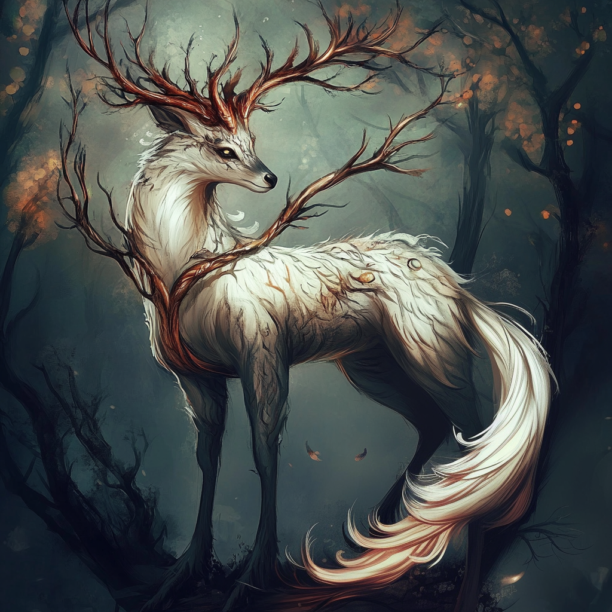

Name: Arlark
Size: Medium, 5 - 7ft tall from shoulder to hoof
Region: Across Wrekkesia
Temperament: Passive unless attacked
Weakness: Dependent on variant
Powers/Abilities: Dependent on variant
Uses/Drops: Common food source, with variant-based meat flavors
Power Ranking: 3
The Arlark is Wrekkesia's most common deer-like creature. It is unique in that it has such varying forms depending on where it's found. In the
Stygian Pass and
Mortum Pass areas, for example, the Arlark variant does not have any meat to collect from killing it. Instead, its bones are much stronger, and are composed of a very sweet, sought after marrow that high level chefs seek in rare and delicate dishes. The
Blood Wood variant is the only Arlark variant who is entirely carnivorous and will eat any kind of meat it can get its sharp teeth around. Regardless of where one is, there's probably an Arlark variant nearby.